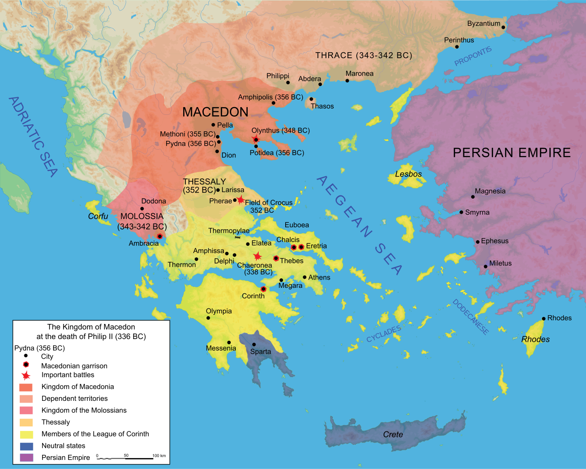

Bài viết chọn lọc
 Macedonia là một vương quốc cổ đại nằm ở ngoài rìa phía bắc của nền văn minh Hy Lạp Cổ xưa và Hy Lạp Cổ điển, và sau này trở thành quốc gia bá chủ ở Hy Lạp thời kỳ Hy Lạp hóa. Vương quốc được thành lập và ban đầu được cai trị bởi triều đại Argead, tiếp theo sau đó là nhà Antipatros và Antigonos. Vốn là quê nhà của người Macedonia cổ đại, phạm vi vương quốc ban đầu nằm tập trung ở khu vực tây bắc của bán đảo Hy Lạp, có biên giới với Ipiros về phía tây, Paeonia về phía bắc, Thrace về phía đông và Thessaly về phía nam. Trước thế kỷ thứ 4 TCN, Macedonia là một vương quốc nhỏ nằm bên ngoài khu vực bị thống trị bởi các thành bang hùng mạnh là Athens, Sparta, và Thebes, và lệ thuộc nhà Achaemenes trong một thời gian ngắn.